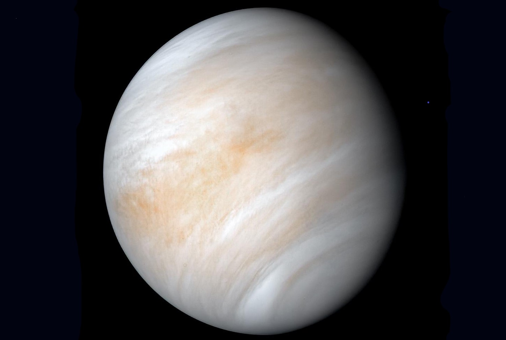

Venus

- A day on Venus is longer than a year.
- Venus is hotter than Mercury despite being further away from the Sun.
- Unlike the other planets in our solar system, Venus spins clockwise on its axis.
- Venus is the second brightest natural object in the night sky after the Moon.
- Venus is known for its exceptional brightness